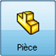
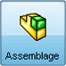
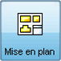
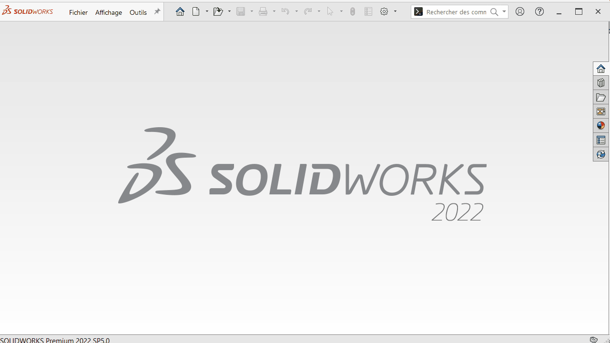

Les différents environnements
Le logiciel de D.A.O. « SolidWorks » vous offre 3 environnements de travail :

Un environnement « pièce » pour modéliser, observer ou modifier une pièce avec comme extension de fichier « *.SLDPRT »
Un environnement « assemblage » pour créer, observer ou modifier un assemblage avec comme extension de fichier « *.SLDASM »
Un environnement « mise en plan » pour créer, observer ou modifier une mise en plan avec comme extension de fichier « *.SLDDRW »Comment lancer un environnements de travail ?
À partir de l’écran d’accueil ; Ouvrir la fenêtre « Nouveau document SolidWorks »
